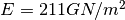
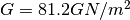
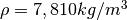
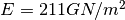
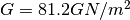
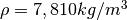

Example 3 - Isotropic Bearings, asymmetrical rotor.¶
In this example, we use the rotor seen in Example 5.9.1 from ‘Dynamics
of Rotating Machinery’ by MI Friswell, JET Penny, SD Garvey & AW Lees,
published by Cambridge University Press, 2010. A 1.5-m-long shaft, with
a diameter of . The disks are keyed to the shaft at
 and
and  from one end. The left disk is
thick with a diameter of
from one end. The left disk is
thick with a diameter of  ; the right disk
is thick with a diameter of
; the right disk
is thick with a diameter of  . For the
shaft,  and . There is no
internal shaft damping. For both the shaft and the disks,
. The shaft is supported by identical
bearings at its ends.
. For the
shaft,  and . There is no
internal shaft damping. For both the shaft and the disks,
. The shaft is supported by identical
bearings at its ends.
These bearings are isotropic and have a stiffness of  in
both the x and y directions. The bearings contribute no additional
stiffness to the rotational degrees of freedom and there is no damping
or cross-coupling in the bearings.
in
both the x and y directions. The bearings contribute no additional
stiffness to the rotational degrees of freedom and there is no damping
or cross-coupling in the bearings.
from bokeh.io import output_notebook
import ross as rs
import numpy as np
output_notebook()
#Classic Instantiation of the rotor
shaft_elements = []
bearing_seal_elements = []
disk_elements = []
Steel = rs.Material.use_material('Steel')
for i in range(6):
shaft_elements.append(rs.ShaftElement(L=0.25, material=Steel, n=i, i_d=0, o_d=0.05))
disk_elements.append(rs.DiskElement.from_geometry(n=2,
material=Steel,
width=0.07,
i_d=0.05,
o_d=0.28
)
)
disk_elements.append(rs.DiskElement.from_geometry(n=4,
material=Steel,
width=0.07,
i_d=0.05,
o_d=0.35
)
)
bearing_seal_elements.append(rs.BearingElement(n=0, kxx=1e6, kyy=1e6, cxx=0, cyy=0))
bearing_seal_elements.append(rs.BearingElement(n=6, kxx=1e6, kyy=1e6, cxx=0, cyy=0))
rotor591c = rs.Rotor(shaft_elements=shaft_elements,
bearing_seal_elements=bearing_seal_elements,
disk_elements=disk_elements,n_eigen = 12)
rotor591c.plot_rotor()
<matplotlib.axes._subplots.AxesSubplot at 0x...>

#From_section class method instantiation.
bearing_seal_elements = []
disk_elements = []
shaft_length_data = 3*[0.5]
i_d = 3*[0]
o_d = 3*[0.05]
disk_elements.append(rs.DiskElement.from_geometry(n=1,
material=Steel,
width=0.07,
i_d=0.05,
o_d=0.28
)
)
disk_elements.append(rs.DiskElement.from_geometry(n=2,
material=Steel,
width=0.07,
i_d=0.05,
o_d=0.35
)
)
bearing_seal_elements.append(rs.BearingElement(n=0, kxx=1e6, kyy=1e6, cxx=0, cyy=0))
bearing_seal_elements.append(rs.BearingElement(n=3, kxx=1e6, kyy=1e6, cxx=0, cyy=0))
rotor591fs = rs.Rotor.from_section(brg_seal_data=bearing_seal_elements,
disk_data=disk_elements,leng_data=shaft_length_data,
i_ds_data=i_d,o_ds_data=o_d
)
rotor591fs.plot_rotor()
<matplotlib.axes._subplots.AxesSubplot at 0x...>

#Obtaining results (wn is in rad/s)
rotor591c.run_campbell(np.linspace(0,4000*np.pi/30,250)).plot()
print('Normal Instantiation =', rotor591c.wn)
print('\n')
print('From Section Instantiation =', rotor591fs.wn)
Normal Instantiation = [ 86.65811435 86.65811435 274.31285391 274.31285391 716.78631221
716.78631221]
From Section Instantiation = [ 86.65926451 86.65926451 274.37573752 274.37573752 718.87267817
718.87267818]
#Obtaining modal results for w=4000RPM (wn is in rad/s)
rotor591c.w = 4000*np.pi/30
rotor591c.run_modal()
print('Normal Instantiation =', rotor591c.wn)
Normal Instantiation = [ 85.389467 87.7958637 251.78460413 294.71333087 600.17936195
827.07536193]